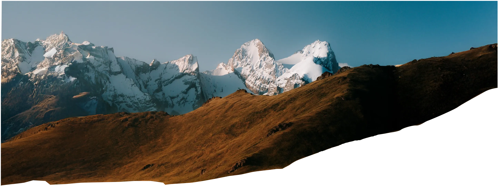
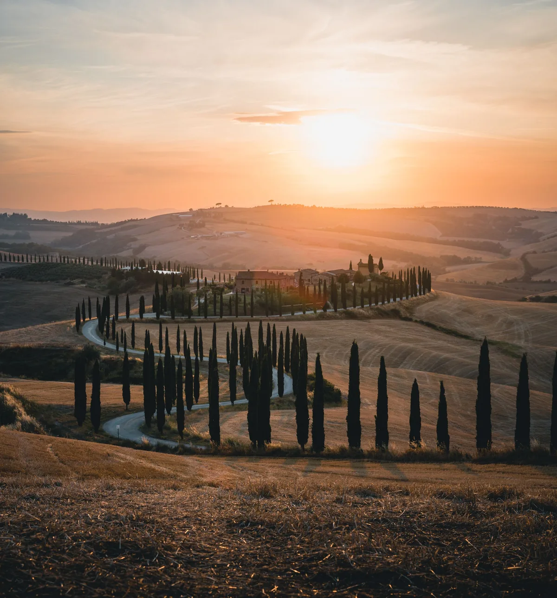

Four routes out of one waypoint.
6-stroke
section rule
4-point
CTA star
The promise is timing, not inspiration. One 20-minute window, every evening.
Amber never decorates. If it is amber, it is pressable — or it is the number you are trying to hit.
Tracking tightens as type grows — the inverse of the usual instinct. Nothing sits at zero or above.


.html itinerary — one self-contained file, its own map, a GPS dot, no network.Every state the traveller can touch, in one row. Neutral is information; amber is a decision.